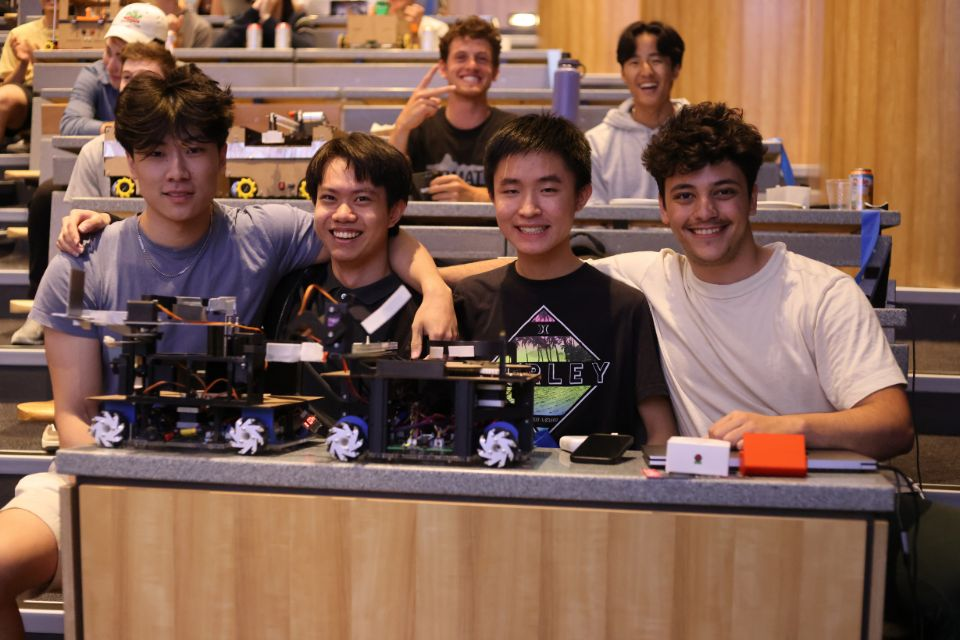
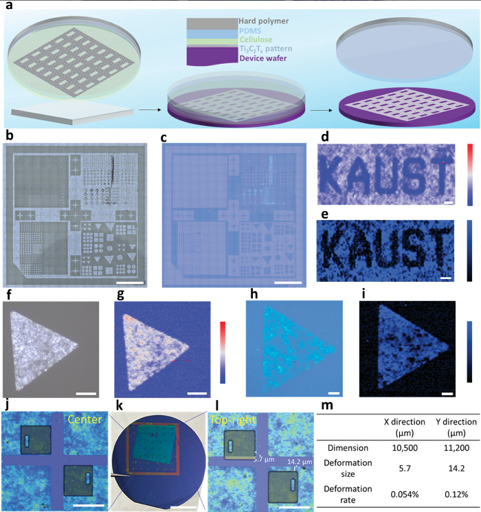
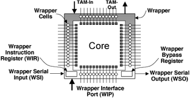
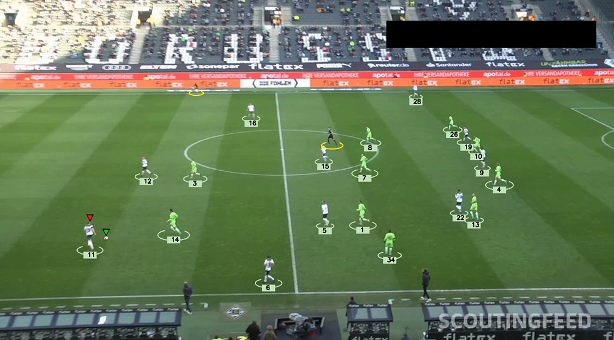

Projects
Hardware, accelerators and a few things in between. For the week-by-week story of the attention accelerator, see the dev blog.

Attention Accelerator: Python → CUDA → RTL
Single-head attention rebuilt at six levels of abstraction and diffed against the level above. The CUDA path reaches 3.86 TFLOP/s on tensor cores; online-softmax RTL cuts latency from 659 to 240 cycles.

RLGera: Bayesian MCTS Reliability Agent
A progressive-widening MCTS agent with EKF belief updates that picks voltage, current-density, temperature and dwell-time stresses in a wear-out simulator. It raised characterization yield from 20.4% to 54.2% across BTI, EM and TDDB, with seeded, fully replayable experiments.

Optimized Serial Adder
A Moore-machine serial adder designed transistor by transistor in Cadence Virtuoso (45 nm). Logic minimization, a transmission-gate XOR and careful sizing reach 1 GHz at 9.87 µW.

FPGA Neural-Network Acceleration
A pretrained network mapped onto a Zynq UltraScale+ ZUBoard with an AXI CPU–FPGA link and pipelined MAC arrays: 0.5 ms per image, 3× faster than the ARM baseline.

Amazon Robotics: Super-Resolution Barcode Scanning
Capstone sponsored by Amazon Robotics. A four-frame beam-shifting imaging rig with calibrated subpixel shifts and SAA/IBP reconstruction that decodes 2 mil finer barcodes on a Bayer sensor, and a clear answer on why it isn't deployable yet.

Autonomous Driving & Sign Reading
A ROS/Gazebo robot that drives a four-zone course with 120 FPS vision and PID, and reads clue boards with a lightweight CNN. Full points in about 40 seconds.

PCBs for the Robot Summer Competition
Power, H-bridge, sensor and actuator boards plus wireless coordination for an autonomous robot that placed 1st of 15 teams.

Wafer-Scale MXene Transistors
Research at KAUST on transferring MXene films at wafer scale for transistors, published in Advanced Materials.

IEEE 1500 DFT Wrapper
A standards-compliant test wrapper for the SoC Lab's wear-out sensor IP, verified for serial and parallel scan access and functional isolation in SystemVerilog/UVM.

Football Match Computer Vision
YOLO detection and K-means team assignment that turn a match clip into an annotated video with basic statistics.